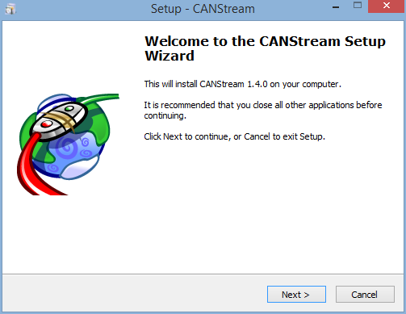
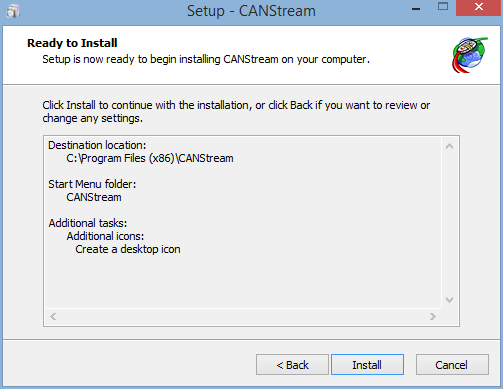
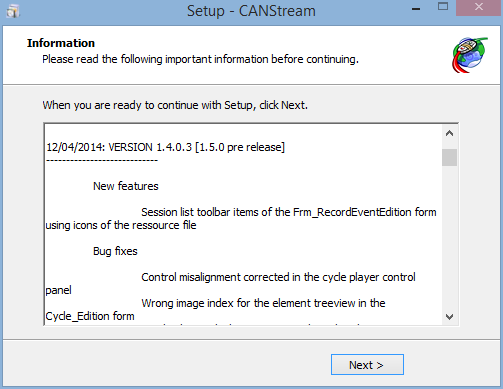

To install CANStream on your computer, just run the installation wizard and follow installation steps.
Depending of your system, Windows 32 bits or 64 bits, you have to run the appropriate installation wizard.
Just double-click on the file corresponding to your system to launch the procedure.

Click ‘Next' to start the installation.

Click ‘I accept the agreement' and then click ‘Next'.

Check the installation folder, change it if you want by clicking the ‘Browse..' button and then click ‘Next'.

Check the name of the Start Menu folder that will be created and click ‘Next'. If you don't want create any 'Start Menu folder', just tick the box ‘Don't create a Start Menu folder' and then click ‘Next'.

If you want create a desktop icon for CANStream, tick the box ‘Create a desktop icon' and then click ‘Next'.

If you are happy with all settings summarized, click ‘Next' to start the actual installation of CANStream. Otherwise, click ‘Back' to change those settings.

Check the release note for your information and click 'Next'.

Here you are! CANStream has been installed. Just click ‘Finish' to launch CANStream. If you don't want launch CANStream now, simply uncheck the ‘Launch CANStream' box and click ‘Finish' to exit the installation wizard.
Created with the Personal Edition of HelpNDoc: Easily create Web Help sites